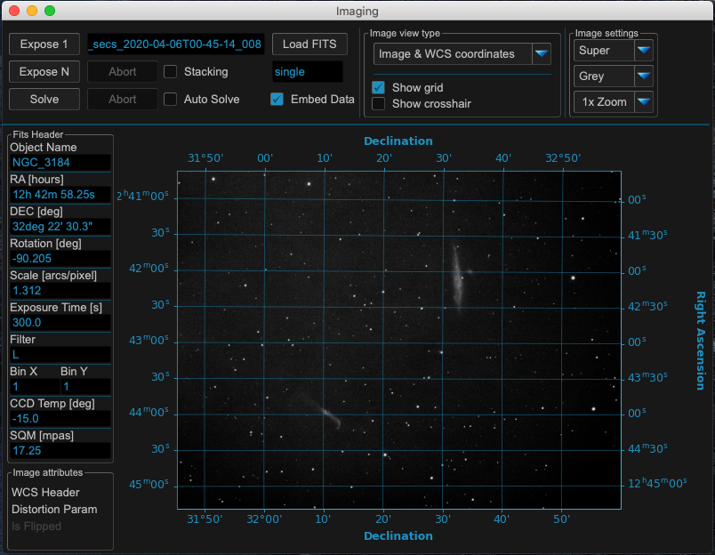
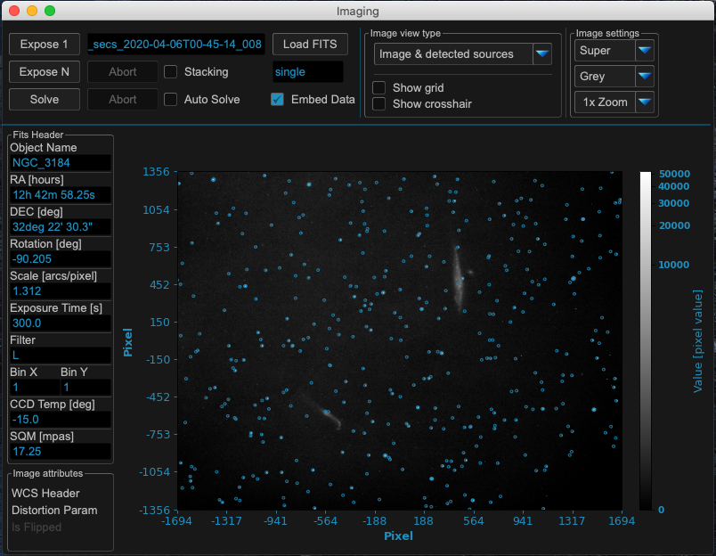
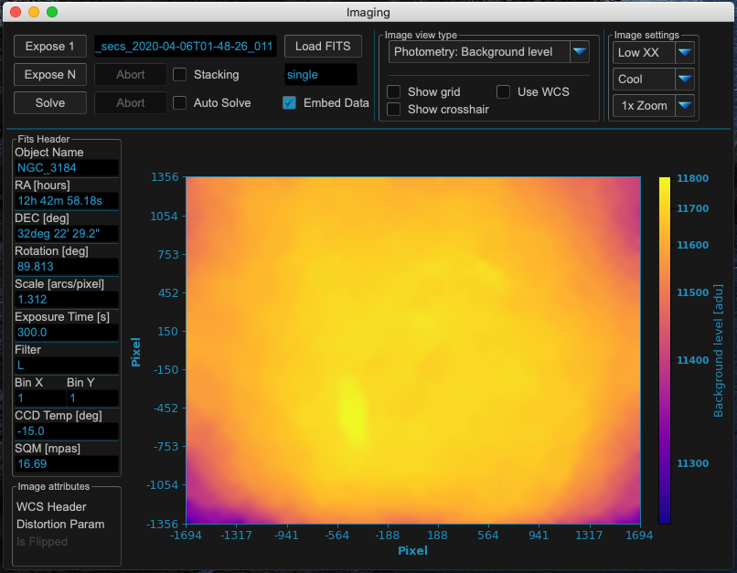
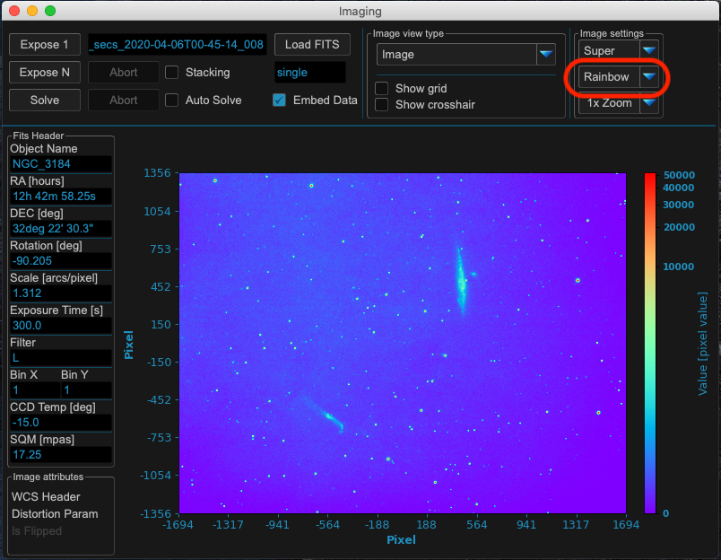

Imaging¶
The imaging window shows FITS files loaded from disk or images exposed manually or during model build. It is split in different areas to work with.
{kind=link}
Area 1: Image exposing and solving¶
MountWizzard4 supports single (expose 1) and multiple (expose N) exposures. Continuous imaging could be stopped with abort. You also could explicitly load a fits file (extension .fit or .fits). If you have a plate solver (e.g. ASTAP) installed, you could solve the actual displayed image. The solved results are shown in message window. If you would like to add the results to the image, please check “embed data”. This will make MountWizzard4 to write the plate solving results in the fits header of the file.
Warning
Please be aware that MountWizzard4 will write the data to be embedded directly in the FITS file without making a copy of the file!
When “auto solve” is checked, MountWizzard4 will automatically plate solve every new picture and show or embed the results in the message window or fits header.
A simple stacking method is available when mount is in tracking and keeps point accurate. When “stacking” is checked, MountWizzard4 will add all exposed images (expose N running) and calculate the mean of the image.
Area 2: FITS Header entries¶
Some of the FITS header entry of the actual image are shown.
Area 3: Image attributes¶
MountWizzard4 calculates and extracts some image attributes. For example if a WCS header information is available, the distortion parameters are present or the actual image is flipped with regard to real position in sky.
Area 4: Image display¶
Show the image and it’s different view selected in area 5. For standard view the scale is pixel with 0/0 to be the center of the image. There will be a colorbar in each view with the values of the image.
Area 5: View options¶
For the image you have different options to alter the main view of the image:
Drop down entry |
Explanation |
|---|---|
Image Raw |
Standard visualization of the image in greyscale. MountWizzard4 does not support colors |
Image with Sources |
An overlay of the image with the extracted sources (stars) as circles |
Photometry: HFD Value |
SEP: 50 top Sources with HFD values |
Photometry: Background level |
SEP: Image of the background level |
Photometry: Background noise |
SEP: Image of the background oise level |
Photometry: Flux |
SEP: Value for flux of the detected sources |
If distortion parameters are included, you could check “UseWCS” and MountWizzard4 will show the RA / DEC coordinates for the first threed image view options.
Some examples for the windows¶
View Image with WCS distortion:
{kind=link}
View Image with sources:
{kind=link}
View image with HFD values
{kind=link}
View image with background level
{kind=link}
View image with background noise
{kind=link}
View image with photometry flux
{kind=link}
View image with different zoom
{kind=link}
View image with different color scheme
{kind=link}